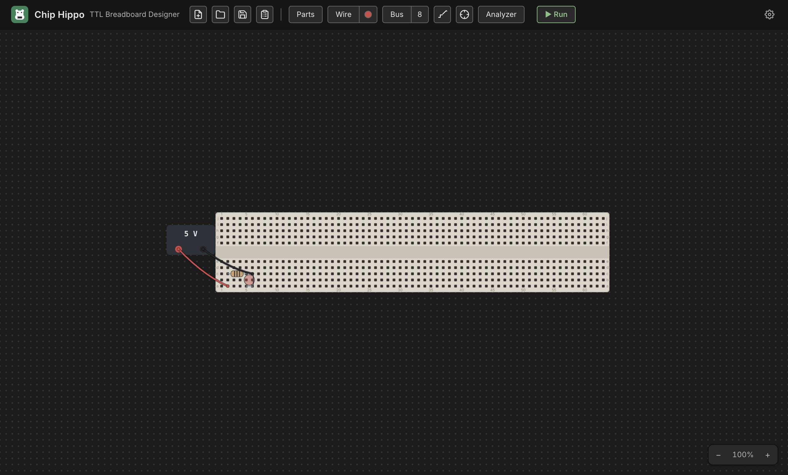

Getting Started
This page walks through building the smallest possible circuit — a breadboard, a power supply, and an LED — from a completely empty desk to a lit LED. It takes about five minutes and introduces the tools you'll use for every larger circuit afterward.

Launch Chip Hippo
Open the installed app like any other desktop program (or, if you're running
from source, make debug). Chip Hippo opens on an infinitely pannable,
zoomable desk — drag to pan, scroll or pinch to zoom, and the header's
zoom controls (bottom-right of the desk) reset or step the view. The first
time you launch, the desk is empty and shows a hint: "Open Parts and add a
breadboard to get started."
Open the parts palette
Click Parts in the header toolbar (or press Ctrl+P / ⌘P) to open the
palette panel on the left. At the top is the board selector (Full / Half
/ Tiny breadboards, plus loose strips); below that, chips and components
grouped by function, with a filter box to search by name.
Add a breadboard
In the palette's BOARDS section, click Full-size (830 tie points) — the default recommendation for a first circuit; it has the most room and both power rails already attached. A translucent ghost of the whole kit follows your cursor. Move it over open desk space and click to drop it.
The Full kit places three strips as one rigid group: a power rail, the pin-board, and a second power rail — exactly like a real solderless breadboard. You can drag the whole board later by its body, or reopen the palette any time to add more.
Add power
Still in the palette, open the COMPONENTS ▸ Power group and click Power supply. A small PSU brick ghost follows your cursor — click open desk space near the breadboard to place it. A PSU brick isn't seated on the board; it's a free-standing part with two wireable terminals, + and −.
Right-click the placed PSU to open its context menu and confirm it's set to 5 V (new PSUs default to 5 V, but 3 V and 12 V are also on the menu — 12 V is enough to damage a chip, so save it for parts rated to take it). The same menu removes the PSU if you want to start over.
Add an LED
Back in the palette, open COMPONENTS ▸ LEDs and click LED. A small
color swatch popover appears first — pick red (or any color) to arm
placement. Move the ghost over a free row of breadboard holes and click to
seat it — an LED's two legs land in adjacent holes on the same row, anode
first. (Press F while the ghost is in hand to flip which leg is the anode,
or R to stand it up on two free ends instead of a footprint row.)
Chip Hippo's LED is idealized — no series resistor is required to protect it, so you can wire it straight to a supply.
Wire it up
Press W (or click Wire in the toolbar) to arm the wire tool. Click a
free hole or terminal to anchor the first end, then click a second free point
to lay the wire — a rubber-band preview tracks your cursor between clicks,
and it turns red over an illegal target. The tool stays armed, so you can
lay several wires in a row without re-arming it; press Esc to cancel a
pending wire, or Esc/click Wire again to disarm the tool.
Lay two wires:
- PSU
+→ the LED's anode hole (or a rail hole in the same row/column as the anode, then the anode's row completes the path through the board). - PSU
−→ the LED's cathode hole, the same way.
The active wire color is shown as a dot on the Wire button; click the dot to open the color palette and pick a different one — the color you pick stays active for every wire you lay afterward, so use different colors for positive and return paths if you want them easy to tell apart at a glance.
Run it
Press Run in the header toolbar (or Space) to start the simulation. The
engine traces power from the PSU, resolves the electrical net at every hole,
and settles the circuit — the LED should light immediately, since anode-high
through cathode-low is exactly what a driven LED needs.
While running, editing is locked (you can't move parts or lay new wires),
but the connectivity probe, the logic analyzer, and the build
guide all stay live. Press Stop (or Space again) to freeze the
simulation and return to editing.
If the LED doesn't light, double-check both wires land on the correct
terminal (+/−) and hole, and that the PSU is on and not showing a damage
badge.
What next
- The Desk & Breadboards — pan/zoom, breadboard kits, strips and rails, snapping and grouping multiple boards together.
- Chips & Components — the parts palette in depth: DIP chips, discretes, placement, and rotation.
- Wiring, Nets & Buses — the wire tool in depth, cross-board wires, colors, and multi-bit buses.
- Power & Clock Sources — PSU voltage and the 12 V damage rule, plus clock sources for sequential circuits.
- Running a Simulation — Run/Pause/Step, the settle model, and how live views (LEDs, chip badges) work.